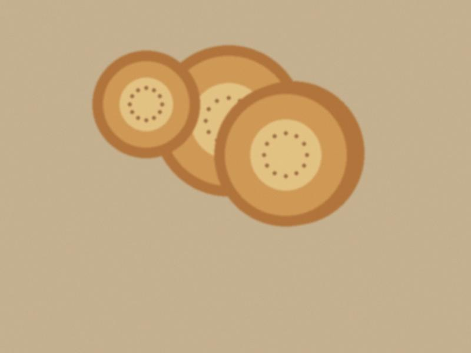

Yesterday I hosted the wedding of Bekzhan, who writes the other blog on this blogroll. Do you remember, last October he wrote in the comments that he would elope and buy a flat? He did not elope. He met his bride because her ATM was broken, and he came to fix it, and he fixed it for a year.
Altyn Ordo toikana, 300 guests. I promised him a free second wedding, so I took the fee for the first one, and he paid in a very serious way, with a computer cable as a gift for me. The bride, Aizhan, has a laugh that I put on the recording to cheer up the DJ. His mother was very tired and very happy, and she did not eat, and I sent a plate to her seat with a boy.

The bread at the head table. They broke it together, and he checked the time on his phone.
87 notes
Marlen, I know the cable was a bad gift. It is a very good cable. Thank you for the toi, my mother is still talking about the microphone.
Comments are closed.